[1] 0.6827[1] 0.9545[1] 0.9973Departamento de Estadı́stica, Sede Bogotá
Funciones de Probabilidad y Densidad
FMP, FDP y distribuciones en profundidad
Herramientas matemáticas para cuantificar la incertidumbre
Bioestadística Fundamental — Departamento de Estadística, UNAL Bogotá
Una función \(p: \mathbb{R} \to [0,1]\) es una FMP si y solo si:
Se inspeccionan 3 plantas de cacao en Tumaco. Cada planta tiene probabilidad \(p = 0.4\) de presentar moniliasis, independientemente.
Sea \(X\) = número de plantas infectadas.
\(p(0) = (0.6)^3 = 0.216\), \(p(1) = 3(0.4)(0.6)^2 = 0.432\),
\(p(2) = 3(0.4)^2(0.6) = 0.288\), \(p(3) = (0.4)^3 = 0.064\)
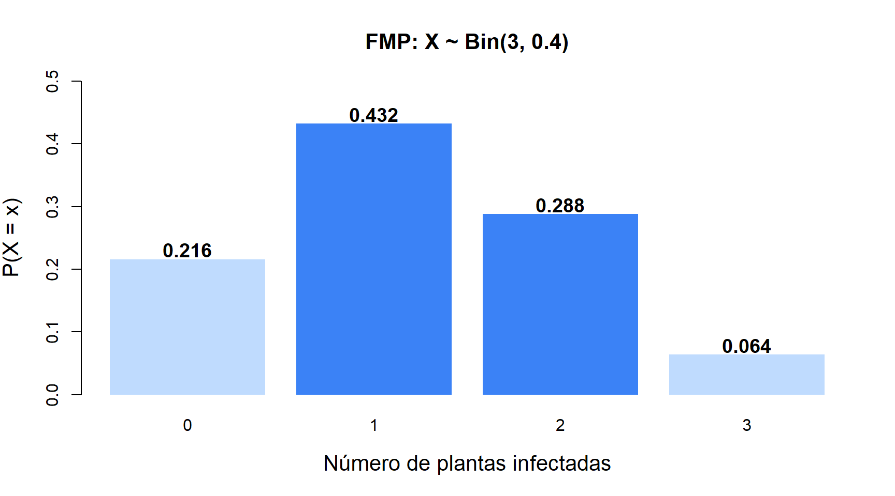
\(X \sim \text{Ber}(p)\):
\[p(x) = p^x(1-p)^{1-x}, \quad x \in \{0,1\}\]
Parámetro: \(p = P(X=1)\), probabilidad de éxito.
\(1-p = P(X=0)\), probabilidad de fracaso.
Es la base de la distribución Binomial.
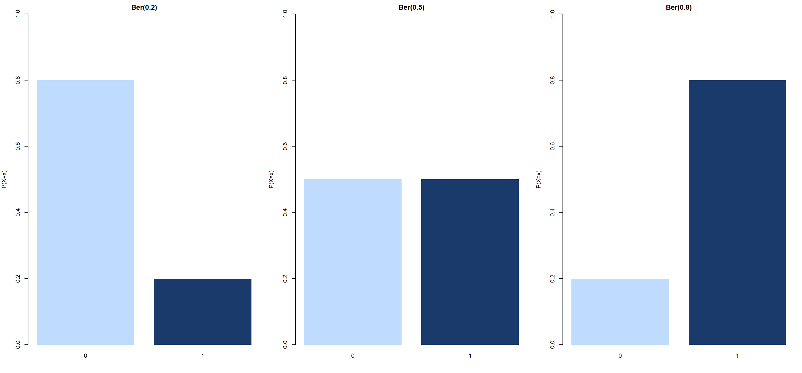
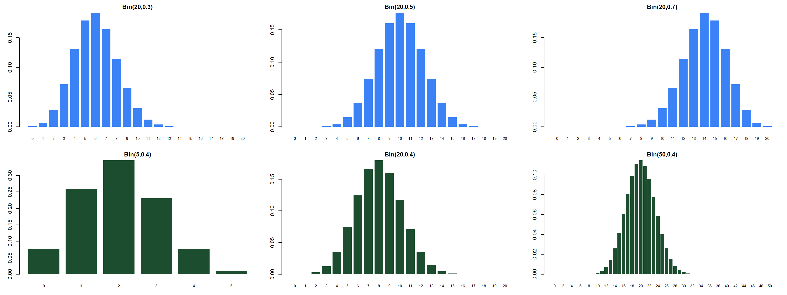
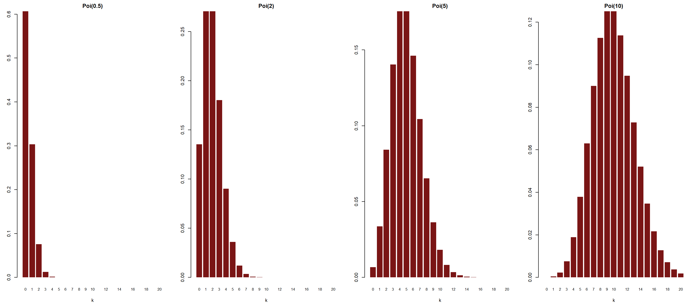
Para \(\lambda\) grande, la Poisson se aproxima a una distribución Normal.
Una función \(f: \mathbb{R} \to \mathbb{R}\) es una FDP si y solo si:
Una variable aleatoria continua \(X\) sigue una distribución uniforme continua en el intervalo \((a,b)\) si todos los valores comprendidos entre \(a\) y \(b\) tienen la misma probabilidad de ocurrir.
\[X \sim U(a,b)\]
La distribución uniforme se utiliza cuando no existe preferencia por ningún valor dentro del intervalo, por lo que la densidad permanece constante en todo el soporte.
\[ f(x)=\frac{1}{b-a}, \quad a<x<b \]
Función de densidad
\[ F(x)= \begin{cases} 0, & x<a \\[6pt] \dfrac{x-a}{b-a}, & a\leq x\leq b \\[10pt] 1, & x>b \end{cases} \]
Función de distribución acumulada
Parámetros: \(a\) y \(b\) representan los límites inferior y superior del intervalo.
Soporte: \(x\in(a,b)\).
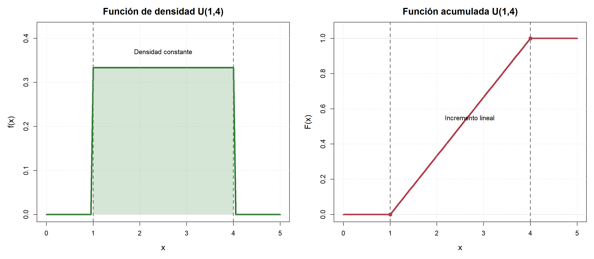
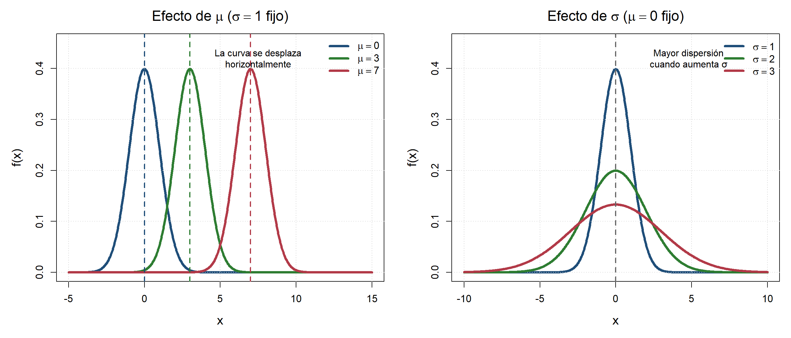
[1] 0.6827[1] 0.9545[1] 0.9973El peso de neonatos a término en un hospital de Medellín sigue \(X \sim N(3200, 400^2)\) gramos. Calcule:
\[ P(Z \leq z)=\Phi(z) \]
En un estudio agronómico realizado en cultivos de café de la región Andina de Colombia, se encontró que la producción mensual de café por finca sigue aproximadamente una distribución normal con:
\[ X \sim N(5200,\; 650^2) \]
donde:
Se desea calcular la probabilidad de que una finca produzca menos de 6000 kg de café en un mes.
\[ X \sim N(5200,650^2) \]
Se desea calcular:
\[ P(X<6000) \]
Aplicando la transformación Z:
\[ Z=\frac{X-\mu}{\sigma} \]
Reemplazando: \[ Z=\frac{6000-5200}{650} \]
\[ Z=1.23 \]
Buscando en la tabla de la distribucion Normal estándar:
\[ P(Z<1.23)=0.8907 \]
Por lo tanto:
\[ P(X<6000)=0.8907 \]
Esto significa que aproximadamente el 89.07% de las fincas cafeteras de la región Andina producen menos de 6000 kg de café por mes.
Una variable aleatoria continua \(X\) sigue una distribución exponencial con parámetro \(\lambda>0\) si modela el tiempo de espera hasta la ocurrencia de un evento.
\[ X \sim Exp(\lambda) \]
La distribución exponencial describe fenómenos donde los eventos ocurren de manera independiente y a una tasa promedio constante.
FDP: \[ f(x)=\lambda e^{-\lambda x}, \quad x>0 \] FDA: \[ F(x)=P(X\le x)=1-e^{-\lambda x}, \quad x>0 \]
Parámetro: \(\lambda>0\) representa la tasa promedio de ocurrencia.
Soporte: \(x\in(0,\infty)\).
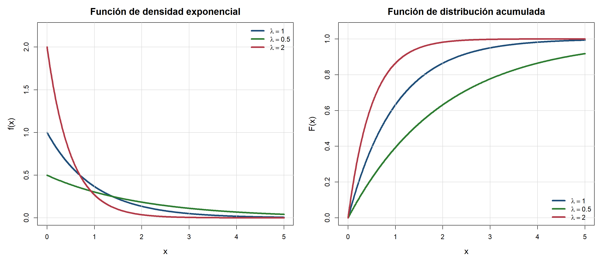
Una variable aleatoria continua \(X\) sigue una distribución Gamma con parámetros \(\alpha>0\) y \(\beta>0\) si:
\[ X\sim Gamma(\alpha,\beta) \]
\[ f(x)= \frac{1}{\Gamma(\alpha)\beta^\alpha} x^{\alpha-1}e^{-x/\beta}, \quad x>0 \]
Función de densidad
Parámetro de forma: \(\alpha\) controla la forma de la distribución.
Parámetro de escala: \(\beta\) controla la dispersión.
Soporte: \(x\in(0,\infty)\).
\(\Gamma(\alpha)=\int_0^\infty t^{\alpha-1}e^{-t}dt\)
Además, \(\Gamma(n)=(n-1)!\)
Casos especiales:
\[ Gamma(1,\beta)=Exp\left(\frac{1}{\beta}\right) \qquad Gamma\left(\frac{n}{2},2\right)=\chi_n^2 \]
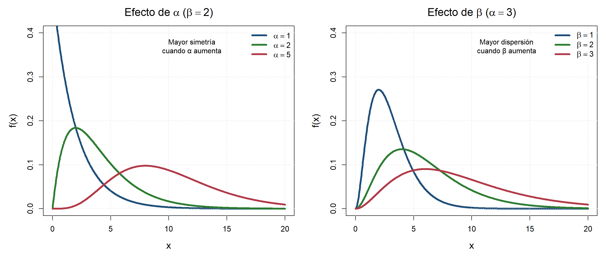
\[f(x) = \frac{x^{\alpha-1}(1-x)^{\beta-1}}{B(\alpha,\beta)}, \quad 0 < x < 1\] donde \(B(\alpha,\beta) = \frac{\Gamma(\alpha)\Gamma(\beta)}{\Gamma(\alpha+\beta)}\).
Parámetro \(\alpha\): controla el comportamiento cerca de 0.
Parámetro \(\beta\): controla el comportamiento cerca de 1.
Soporte: \(x\in(0,1)\).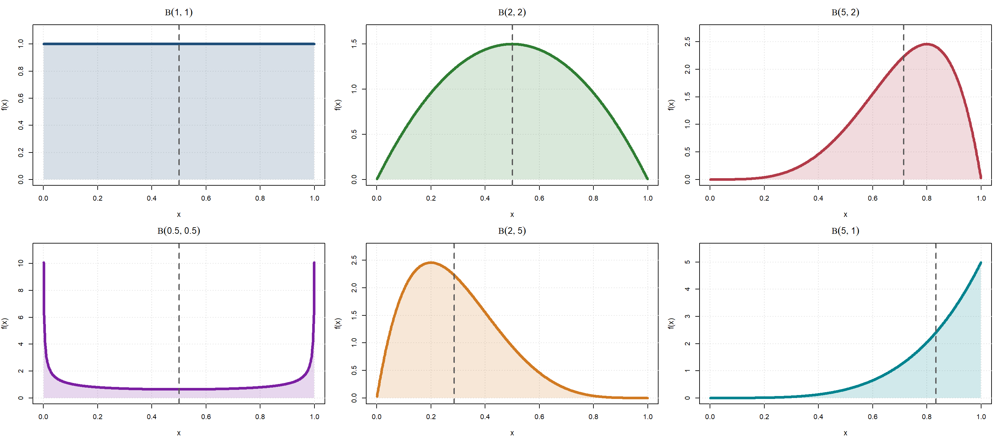
Si \(Z_1,\ldots,Z_\nu\) son variables aleatorias independientes con:
\[ Z_i\sim N(0,1) \]
Entonces la suma de sus cuadrados sigue una distribución Chi-cuadrado:
\[ Q=Z_1^2+\cdots+Z_\nu^2\sim\chi^2(\nu) \]
\[ f(x)= \frac{1}{2^{\nu/2}\Gamma(\nu/2)} x^{\nu/2-1}e^{-x/2}, \quad x>0 \]
Es un caso particular de \(Gamma(\nu/2,2)\)
Parámetro: \(\nu\) representa los grados de libertad.
Soporte: \(x\in(0,\infty)\).
Es fundamental en inferencia estadística, especialmente en pruebas de bondad de ajuste y estimación de varianzas.
La distribución t de Student se utiliza para inferencia sobre medias cuando la varianza poblacional es desconocida.
\[ Z\sim N(0,1), \qquad Q\sim\chi^2(\nu) \]
Si \(Z\) y \(Q\) son independientes:
\[ T= \frac{Z}{\sqrt{Q/\nu}} \sim t(\nu) \]
\[ f(t)= \frac{\Gamma\left(\frac{\nu+1}{2}\right)} {\sqrt{\nu\pi}\cdot \Gamma\left(\frac{\nu}{2}\right)} \left(1+\frac{t^2}{\nu}\right)^{-(\nu+1)/2} \]
Parámetro: \(\nu\) grados de libertad.
Soporte: \(t\in(-\infty,\infty)\).
Es simétrica alrededor de 0 y tiene colas más pesadas que la normal.
Cuando \(\nu\to\infty\), se aproxima a \(N(0,1)\).
Se usa en pruebas de hipótesis e intervalos de confianza para medias.
| Prefijo | Significado | Ejemplo |
|---|---|---|
d |
FMP / FDP | dnorm(x, 0, 1) — valor de la FDP en \(x\) |
p |
FDA | pnorm(1.96) — \(P(Z \leq 1.96)\) |
q |
Cuantil (inversa FDA) | qnorm(0.975) — valor tal que \(\Phi(x) = 0.975\) |
r |
Simulación aleatoria | rnorm(100, 50, 10) — 100 obs de \(N(50,100)\) |
El mismo esquema aplica a todas las distribuciones: dbinom, pbinom, qbinom, rbinom; dpois, ppois; etc.
En un municipio de la Orinoquia, el número de casos semanales de leptospirosis sigue una \(\text{Poi}(\lambda = 3)\). Calcule:
El IMC de adultos en una ciudad colombiana se distribuye aproximadamente \(N(\mu=26.5,\, \sigma^2=4^2)\). Calcule:
El tiempo de vida (en horas) de un parásito fuera del huésped sigue una distribución \(\text{Exp}(\lambda = 0.25)\). Determine:
Determine si \(f(x) = ce^{-2x}\) para \(x > 0\) es una FDP válida y encuentre \(c\).
Binomial: media = 9.02 sd = 2.53 Normal: media = 8.97 sd = 2.53 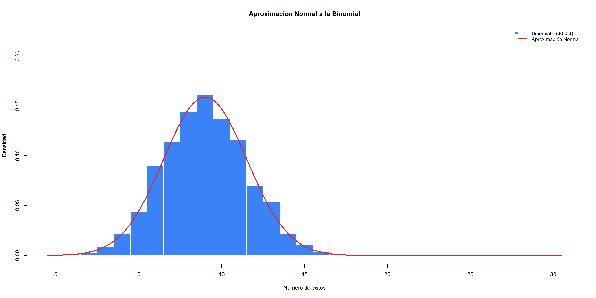
A veces los datos provienen de subpoblaciones con distintas distribuciones. Por ejemplo, el peso de bovinos de una finca puede mezclar machos \(N(\mu_1, \sigma_1^2)\) y hembras \(N(\mu_2, \sigma_2^2)\).
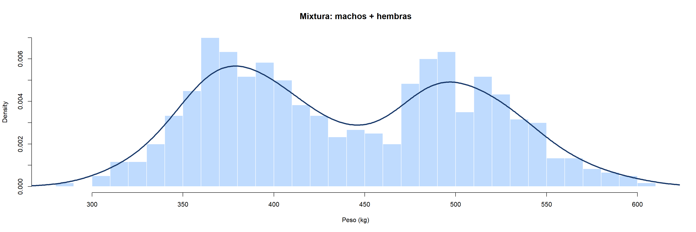
Ejercicios para resolver en clase
Funciones de probabilidad y densidad
En un ensayo clínico sobre tuberculosis en el Cauca, se seleccionan 6 pacientes. La probabilidad de respuesta positiva al tratamiento es 0.70. Sea \(X\) = número de pacientes que responden.
p(0)= 7e-04 p(3)= 0.1852 p(6)= 0.1176 P(X>=5) = 0.4202 P(X=3) = 0.1852 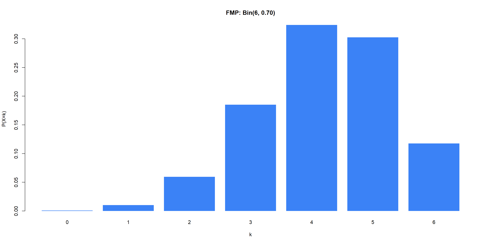
La hemoglobina (g/dL) en mujeres adultas de Bogotá sigue \(X \sim N(12.8,\; 1.2^2)\). Se considera anemia si \(X < 12\) g/dL.
P(anemia) = 0.2525 Z(11) = -1.5 — está 1.5 σ por debajoQ1 = 11.991 g/dLP(11.5≤X≤14)= 0.702 En un laboratorio de microbiología, el número de colonias de E. coli por placa sigue una distribución de Poisson. Se registraron los siguientes conteos en 10 placas:
3, 1, 5, 2, 4, 3, 6, 2, 4, 3
lambda estimado = 3.3 P(X=0) = 0.0369 P(X>=5) = 0.2374 P(X>8) = 0.0069 Información sobre casos semanales de dengue:
P(XA=0) = 0.0183 P(XB=0) = 0.0115 Var(XA) = 4 Var(XB) = 3.2 P(XA>6) = 0.1107 P(XB>6) = 0.0867 Clase 11
Valor esperado, varianza y percentiles
Resumiendo distribuciones: centro, dispersión y posición